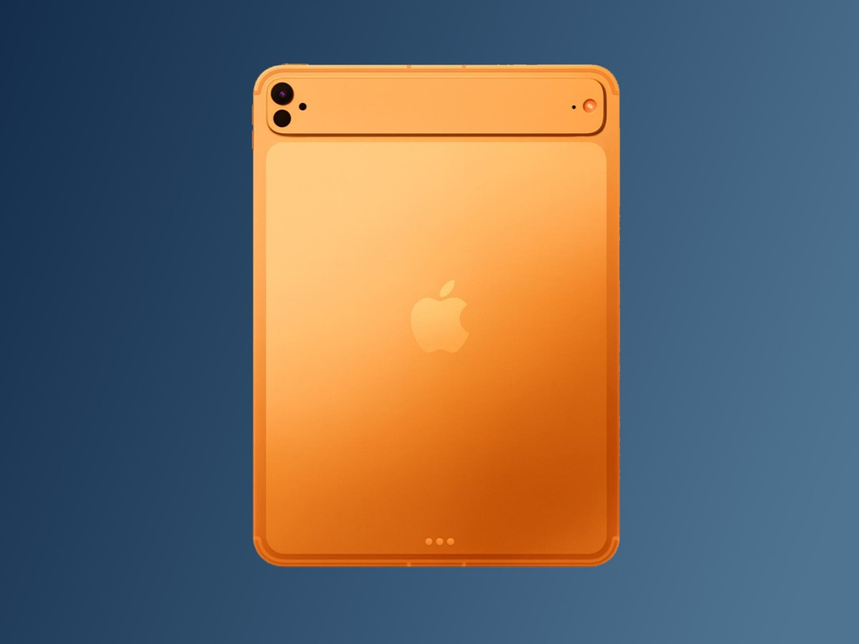
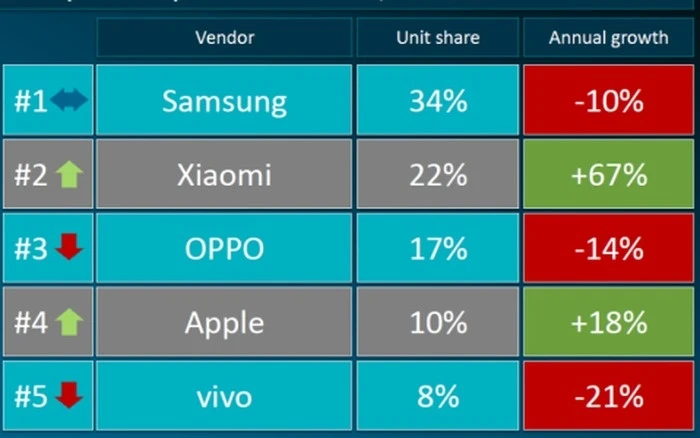
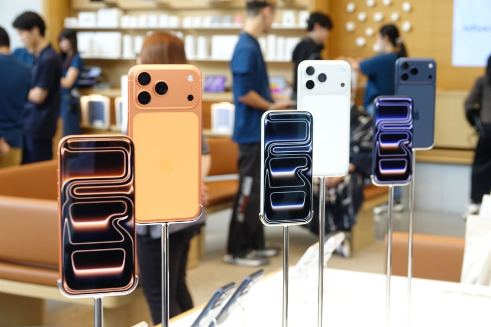
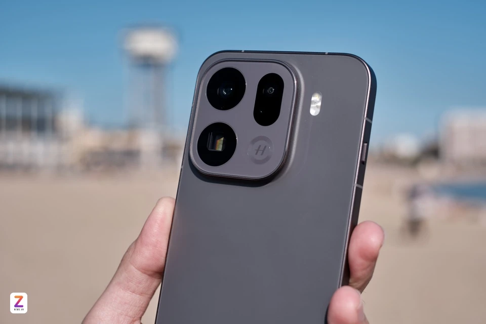
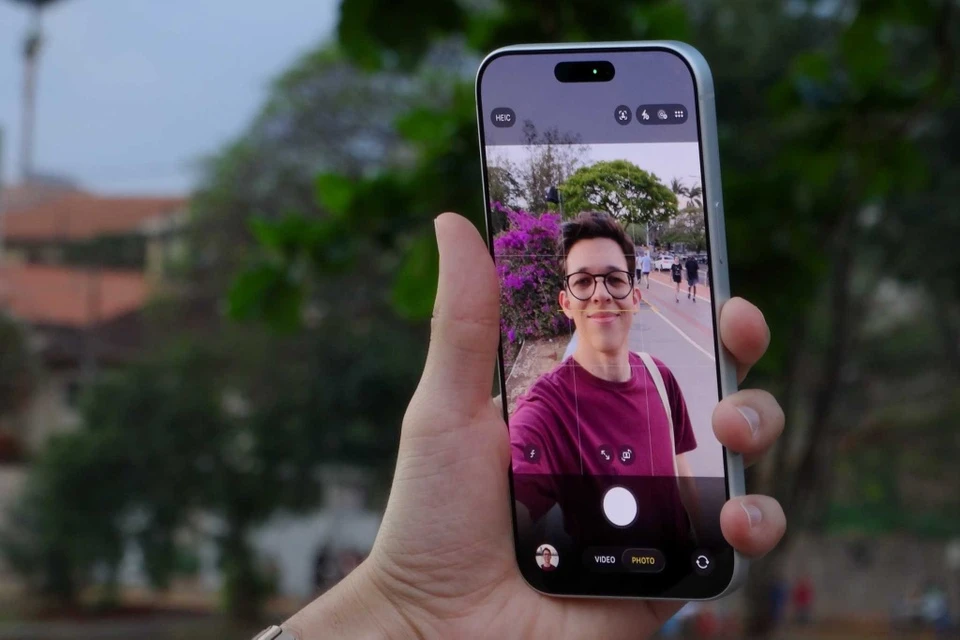
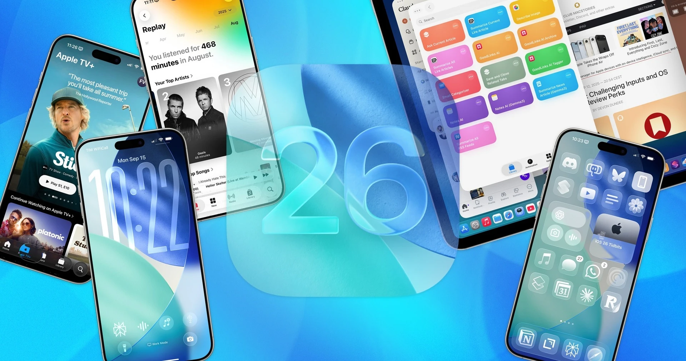

Tin Tức

iPad Pro sắp đổi mới - Liệu có phải bước tiến công nghệ?
Tạp chí tin tức 22 giờ
iPad Pro thế hệ tiếp theo dự kiến trang bị tản nhiệt buồng hơi tương tự iPhone 17 Pro, giúp đảm bảo nhiệt độ và hiệu năng ổn định.

Quân bài chiến lược của Xiaomi ở Việt Nam
Doanh nghiệp 6 giờ
Xiaomi áp đảo ở phân khúc giá rẻ nhưng ít lợi thế ở các dòng flagship tại Việt Nam. Dòng T trở thành model quan trọng nhất của hãng này để đưa người dùng lên lựa chọn cao hơn.

Tại sao 'iPhone Nhật' luôn rẻ
Tạp chí tin tức 12 giờ
Bất chấp biến động địa chính trị và tỷ giá, iPhone tại Nhật Bản vẫn thuộc nhóm rẻ nhất thế giới.

Oppo ra mắt Find X9 Pro với pin 7.500 mAh
VietQ 13 giờ
Bộ đôi Oppo Find X9 cải tiến mạnh về phần cứng và camera, riêng Find X9 Pro trang bị dung lượng pin 7.500 mAh.
Sinh viên mới ra trường chọn smartphone nào đa năng mà hợp túi tiền?
Zing 9 giờ
Trong tầm giá dưới 10tr, Oppo A6 Pro series trở thành lựa chọn lý tưởng với người trẻ mới gia nhập thị trường lao động nhờ độ bền bỉ và cấu hình đa nhiệm.

Bí mật của iPhone 17
Zing 4 giờ
Apple cho rằng họ lại "tái định nghĩa" camera trước trên iPhone 17 nhờ cảm biến vuông, loạt thuật toán tự động tối ưu ảnh.

Kỷ lục của Xiaomi 17 được xác nhận
Tạp chí tin tức 7 giờ
Xiaomi 17 series đã vượt mốc 1 triệu chiếc bán ra chỉ sau 5 ngày ra mắt.
